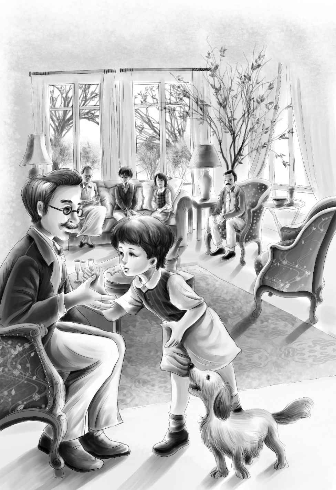

Dr．Moore went to get his mother．
“Mother，” he said， “this is Mr．James Henry Alden．He wants to take his grandchildren to live with him．”
“I’m afraid they won’t want to go with you，” said Mrs．Moore， “until they learn to like you．And they won’t want to go while Violet is so sick．”
“Can’t I see them？” begged Mr．Alden．“I won’t tell them who I am．”
“That would help，” agreed the doctor．“If they grow to like you before they know who you are， things will be easier．”
“Yes，” said Mrs．Moore．“Stay here with us for a while．The children will learn to like you， and then we can tell them that you are their grandfather．”
“Thank you，” said Mr．Alden．“I will go home and get some clothes and come back．And I will give you the five thousand dollars．”
But Dr．Moore would not take the money．
“I just want these children to be happy，” he said．
When Mary learned that she was to cook for Mr．Alden， she was frightened．“How can I cook for him？” she cried “He has everything．He is a very rich man．”
“You can cook for anyone，” said Dr．Moore， kindly．“Just get one of your good chicken dinners and make some cherry dumplings．”
At dinner Mr．Alden saw all his grandchildren but Violet．He smiled with delight when he saw Jessie come into the room in her quiet way．
“Children，” said Mrs．Moore， “this is Mr．Henry．”
Benny laughed．“Henry and Mr．Henry，” he remarked．“That is funny．”
Henry shook hands with Mr．Alden before he sat down at the table．
“Where have I seen that man before？” he thought．
The children liked to hear Mr．Henry talk．He told them about a big cucumber in his garden．The cucumber was growing inside a bottle， and he couldn’t get it out．
“Why not？” asked Benny．

“It is too big，” said Mr．Alden．
“How did it get in？” asked Benny．
“It was a little cucumber when it went in，” said Mr．Alden．“A cucumber will grow just the same in a bottle．It will grow so big you can’t get it out．”
“I’d like to see the cucumber，” said Benny， stopping in the middle of his cherry dumpling．
“Would you really？” asked Mr．Alden， delighted．“Some day you and I will go over and pick it．”
“And we can bring it to Violet，” said Benny．
“Yes， we’ll bring it to Violet，” agreed Mr．Alden．
Henry thought again， “Where have I seen that man before？ I wish I could remember．”
He could not remember， but he liked Mr．Alden very much．All the children liked him because he was kind to them．
At last， one day， Mr．Alden could see Violet and went softly into her room with some beautiful flowers from his garden．The children loved him when he patted Violet’s dark head and told her that he was sorry she had been sick．
He told her， too， about his garden， where the flowers came from．
“I’d like to see your garden，” said Violet．“I love flowers．”
“How long are you going to stay， Mr．Henry？” asked Benny．
“Sh， Benny！” said Jessie．
“I want to stay here as long as I can， my boy，” said Mr．Alden quietly．
Henry looked at the man again．He knew that he had heard him say “my boy” before．Now where was it？ He could not remember．
After dinner Mr．Alden sat under a tree， reading．Henry was working in the flower garden in front of the house．He looked at Mr．Alden again and again．
Suddenly it came to him， as the man smiled over his book．“It is the same man who gave me the twenty-five-dollar prize and the silver cup！” he said to himself．“I didn’t remember him at first because I was so excited when he shook hands with me．” He took another look and said again， “It’s the very same man！”
Henry sat thinking for a little while．Then he got up and went to find Dr．Moore．
“Do you know who gave me the prize on Field Day？” he asked the doctor．“Do you know what his name was？”
“James Alden， of the mills，” replied the doctor．”J．H．Alden， over at Greenfield．” He did not look at Henry while he was saying it．
Poor Henry was so surprised he almost fell over！ That kind man his grandfather！ He went out and sat on the steps to think it over．
To begin with， this man was too young．Henry had thought of his grandfather as being an old man with white hair．And Mrs．Moore had called him “Mr．Henry．” Could it be that the man knew he was their grandfather and hadn’t told them？
Then he saw that Mr．Alden was getting out of his chair under the trees．
“It’s now or never，” thought Henry．“I have to know！”
He walked eagerly after the man， who was going toward the garden with his back to Henry．Then the man turned around and saw how excited Henry was．
“Are you James Henry Alden of Greenfield？” Henry asked．
“I am， my boy，” replied Mr．Alden， with a smile．“Does that mean you know that I know you are Henry James Alden？”
“Yes，” said Henry quietly．
Then James Henry Alden shook hands again with Henry James Alden．
Jessie and Benny came across the grass just in time to hear Henry say， “But， Grandfather ——”
“Grandfather？” cried Jessie．“What do you mean， Henry？”
“Yes， Jessie，” said Henry eager-ly．“He’s the man we have been running away from all this time．”
“I thought you were old，” said Benny．“And cross．Jessie said so．”
“I didn’t know， Benny，” said Jessie．Her face was red．To think of running away from this kind man！
But her grandfather did not seem to mind．He patted her on the head and said， “Let’s go up and see Violet．”
There was no stopping Benny．He hurried into Violet’s room， holding Mr．Alden by the hand and shouting， “It’s Grandfather， Violet！ And he isn’t cross after all！”
“What do you mean？” asked Violet．“Isn’t he Mr．Henry？”
“My name is James Henry Alden，” replied her grandfather．
“And my name is Henry James Alden，” cried Henry．
“Well， well！” said Dr．Moore．
Violet held on to her grandfather’s hand and listened to the rest talking excitedly．
“Where have you been living？” asked Mr．Alden at last．
They all looked at each other， even Dr．Moore and his mother．Then they all laughed as if they never would stop．
“You just ought to see！” said Dr．Moore．
“What！” cried all the children at once．“You never saw it in the daytime．”
“Is that so？” laughed the doctor．“I have seen it many times in the daytime．”
“Seen what？” asked Mr．Alden．
“Our house，” said Jessie．“We have been living in a boxcar in the woods．”
Then they all began to tell him about the dump and the dishes and the brook and the swimming pool．
“They have four beds of pine needles in the car，” said Dr．Moore．
“How do you know？” asked Jessie．
“Well，” said Dr．Moore， “the first day Henry worked for me， I walked after him as far as the hill．”
“Why did you do that？” asked Mr．Alden．
“I liked him．I saw he was a fine boy， and I wanted to see where he lived．”
“But you can’t see the boxcar from the hill，” said Jessie．
“No， but I came back that night and looked around，” said Dr．Moore．
“About ten o’clock！” cried Jessie．
“Yes，” said the doctor．“I stepped on a stick， and you heard me．”
“Our rabbit！” cried Jessie and Henry．“Watch barked．”
“Yes， I heard the dog bark．So I knew you were in the boxcar．Then I went home．”
“But you came back？” asked Jessie．
“Oh， yes．When you were picking cherries， I went up to see your house．I wanted to see if you had enough to eat and enough dishes．”
“Why didn’t you tell me？” asked Mr．Alden．“Didn’t you know they were my grandchildren？”
The doctor laughed．“Yes， I did．But they were having such a fine time that I didn’t want to tell．They got along very well until Violet got sick．Then I told you．”
“I’m glad you did，” said Mr．Alden．
“I have seen your house， too，” said Mrs．Moore．“I went up one day and saw all your dishes．I liked your big pitcher and teapot．”
“All of you have seen it but me！” said Mr．Alden．
“We’ll show it to you！” cried Benny．“I’ll show you my cart made out of wheels， and my pink cup．”
“Good for you， Benny，” said his grandfather， much pleased．“When Violet gets well， we’ll all go up there．If you will show me your house， I’ll show you my house．”
“Do you have a house？” asked Benny in surprise．
“Yes．You can live there with me if you like it．I have been looking for you children for a long time．”
Violet was soon well again， and one afternoon they all started out to see the boxcar．The doctor took them in his car．Many people looked out of their windows to watch Mr．Alden and his grandchildren．They were glad that the children had found such a kind grandfather at last．
When they arrived at their old home， they ran around， all talking excitedly．Watch sniffed and sniffed all around， looking for the bone he had buried．Everything was the same．
“Here is the dam for the pool，” said Henry to his grandfather．
“See our ‘building’！” shouted Benny， for that was what he called the fireplace．“It really burns， too．And this is the refrigerator in the waterfall， and here is my pink cup！”
They all stepped on the stump and climbed into the car．They looked at the four beds and the dishes．
“Here is the same old pitcher and teapot，” said Jessie， laughing．
They found the blue tablecloth， and they all sat down by the brook and ate chicken and bread and butter and cookies．Benny drank milk from his pink cup．
“Come， we ought to go now，” said Dr．Moore at last．“The sun is going down．I don’t want Violet to take any more cold．”
They closed the boxcar door and said good-by．But they were all sorry to go．
“Tomorrow，” said Mr．Alden， “Will all of you come to see my house？”
“Oh， yes，” cried the children happily．They did not know what a beautiful house it was and what good times they were going to have in it．